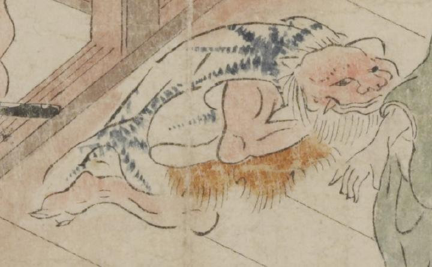

赤い肌の鬼。頭部は横に潰れ、後頭部から髪を生やし、顎ひげを伸ばしている。顔は獣のようで、耳がなく、上顎から牙が生えている。青い模様の入った着物を着て、腹のほうに毛皮を敷き、亀のような姿勢で蹲っている。
著作者：坂本弥一郎徳定／出典：親書誌：U426_nichibunken_0080：伊吹山酒呑童子絵巻；イブキヤマシュテンドウジエマキ／日付：2007／資源識別子：U426_nichibunken_0080_0007_0003
Copyright (c)2010- International Research Center for Japanese Studies, Kyoto, Japan. All rights reserved.